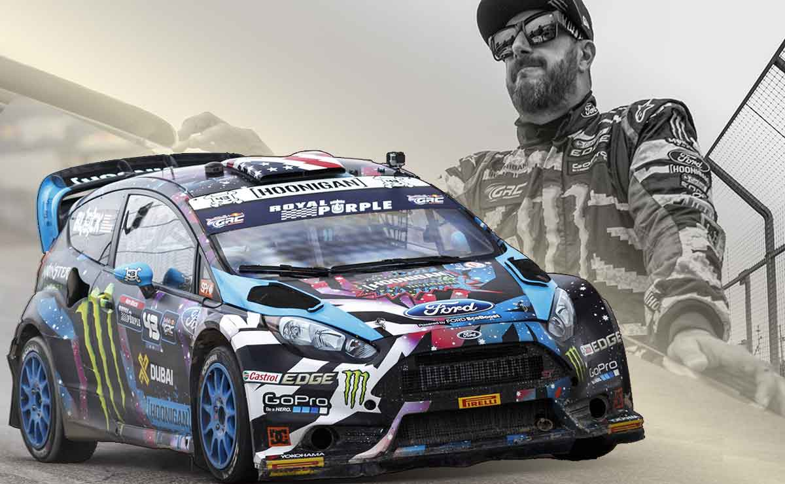

Ken Block foi um piloto de corridas, empresário e personalidade do automobilismo. Ele ganhou fama por suas habilidades de pilotagem e vídeos virais de manobras espetaculares, especialmente na série "Gymkhana". Além de competir em ralis e produzir vídeos, ele fundou a equipe Hoonigan Racing Division e foi co-fundador da marca de roupas DC Shoes. Block competiu em várias competições, conquistando vitórias e pódios ao longo de sua carreira. Ele é conhecido por seu estilo agressivo de pilotagem e se tornou um ícone do automobilismo.
